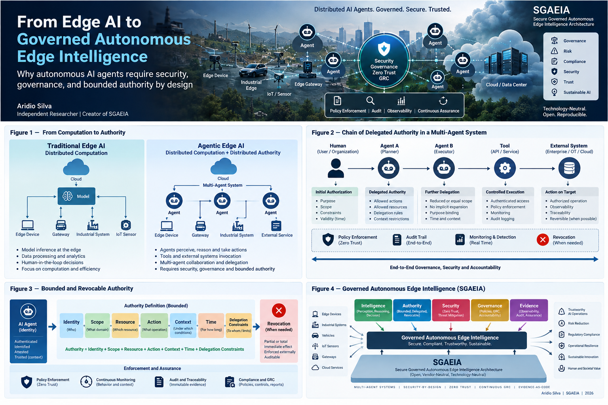
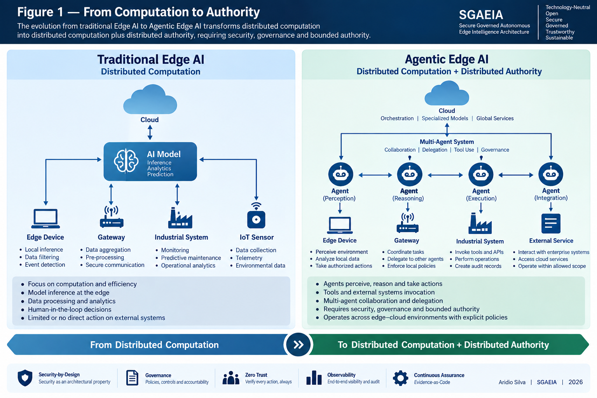
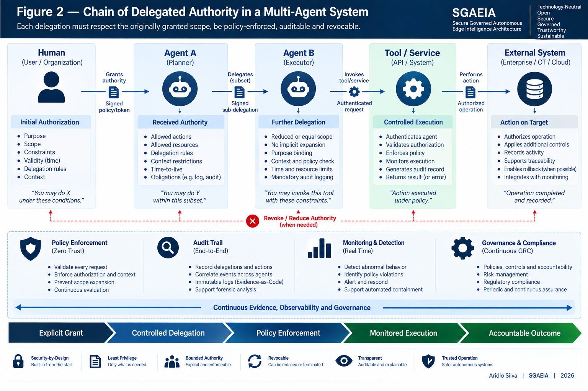
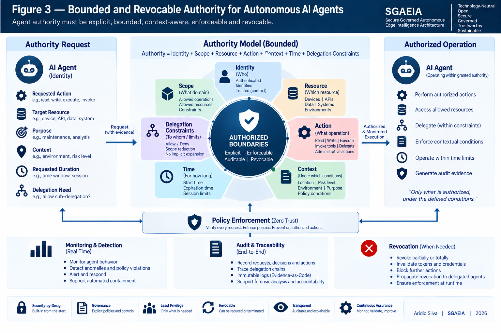
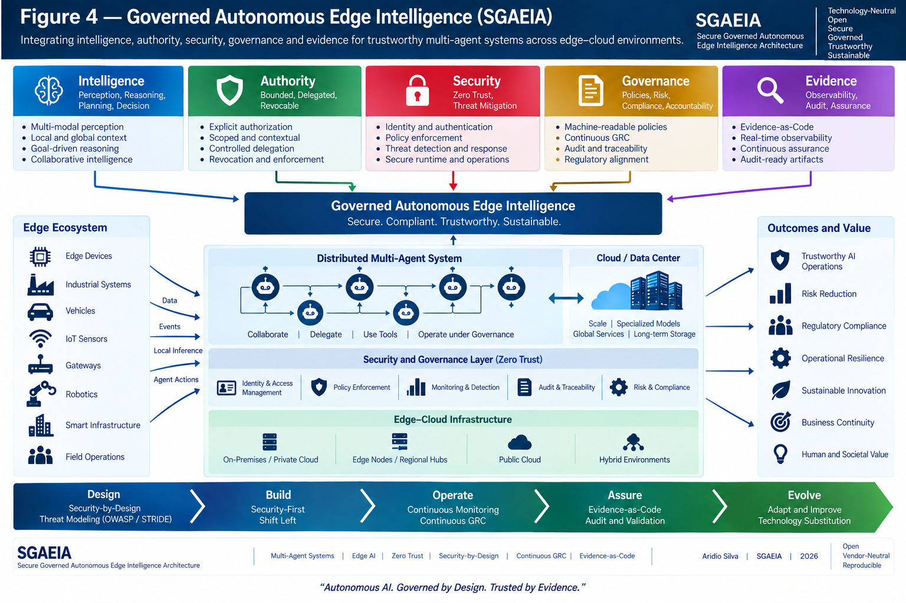

Abstract
This article examines the transition from conventional Edge AI to governed autonomous edge intelligence. It argues that agentic systems distribute not only computation but also operational authority, creating requirements for bounded and revocable authorization, Zero Trust verification, executable governance, evidence-as-code, and security-preserving technology substitution. It introduces SGAEIA as an open reference architecture for governing autonomous agents across distributed edge environments.
Keywords: Agentic AI; Edge AI; autonomous agents; AI governance; Zero Trust; bounded authority; evidence-as-code; SGAEIA.

From Edge AI to Governed Autonomous Edge Intelligence
From Cloud AI to Edge AI
Artificial Intelligence is undergoing a fundamental architectural transition. For years, AI systems were primarily designed to analyze data, generate predictions, classify information, or produce content. Even with the emergence of generative AI and Large Language Models, most systems initially remained essentially advisory: they generated information that humans could evaluate before taking action. Agentic AI changes this relationship. Autonomous AI agents can increasingly perceive their environments, reason about goals, communicate with other agents, invoke tools, access external services, delegate tasks, and perform actions across digital and physical infrastructures. [3], [5] At the same time, AI computation is moving beyond centralized cloud environments toward increasingly distributed architectures involving edge devices, gateways, local computing nodes, private infrastructure, and cloud services. These two transformations-autonomous agency and distributed intelligence-create an architectural problem that cannot be addressed simply by adding conventional security controls around an AI model. The central question becomes: How can an autonomous AI system be granted enough authority to perform useful actions while ensuring that such authority remains bounded, verifiable, auditable, and revocable? This question is at the center of my current research and motivated the development of SGAEIA-Secure Governed Autonomous Edge Intelligence Architecture. [15]
Cloud computing enabled organizations to centralize massive computational resources and datasets, making the development and deployment of large-scale AI systems economically viable. However, not every intelligent decision can depend entirely on distant cloud infrastructure. Latency, connectivity, privacy, resilience, bandwidth, regulatory requirements, operational autonomy, and real-time decision-making increasingly require computation to occur closer to where data is generated. This has contributed to the development of Edge AI. In a conventional Edge AI architecture, models may execute on devices, gateways, industrial systems, vehicles, local servers, or regional infrastructure. Some processing occurs locally, while more computationally intensive tasks may still be delegated to cloud services. [1], [2] Edge AI therefore distributes computation. Agentic AI introduces something more consequential. It also distributes authority. Edge AI distributes computation. Agentic Edge AI distributes computation and authority.

From Edge AI to Governed Autonomous Edge Intelligence
When Intelligence Becomes Authority
Figure 1-From Computation to Authority. Traditional Edge AI primarily distributes computation; Agentic Edge AI
additionally distributes operational authority, introducing new requirements for security, governance, delegation, and accountability. This distinction changes the security model. Protecting models, data, networks, and devices remains necessary, but it is no longer sufficient. The architecture must also control what autonomous agents are authorized to do.
Consider the difference between two AI systems. The first analyzes telemetry from an industrial environment and recommends that a machine should be stopped. The second analyzes the same telemetry, determines that the machine represents an operational risk, authenticates itself to an industrial control system, invokes an authorized tool, stops the machine, creates an incident record, and delegates diagnostic analysis to another autonomous agent. Both systems use AI. Architecturally, however, they belong to very different risk categories. The first system produces information. The second exercises authority. Once an AI agent can invoke tools, modify systems, communicate with other agents, access resources, delegate tasks, or trigger real-world actions, security can no longer focus exclusively on protecting models and data. [3], [5] We must also govern the authority exercised by the agent.

From Edge AI to Governed Autonomous Edge Intelligence
Figure 2-Chain of Delegated Authority in a Multi-Agent System. Authority originates from an explicit grant and may
The Problem of Autonomous Delegation Multi-agent systems make this challenge substantially more complex. An agent may receive authority from a human, application, organization, or another agent. It may then delegate part of a task to another agent, which may invoke another service or agent. A relatively simple workflow can therefore evolve into a chain such as: Human → Agent A → Agent B → Tool / Service → External System Authentication alone cannot govern this chain. The architecture also needs to determine what authority was originally granted, which portion may be delegated, to whom, for what purpose, for how long, under which contextual conditions, and whether that authority can subsequently be reduced or revoked. [4], [8] Most importantly, the complete chain must remain reconstructable. propagate through agents, tools, and external systems only within enforceable constraints, while remaining observable, auditable, and revocable. This means identity alone is insufficient. Authentication answers: Who are you? Governed autonomous systems must additionally answer: What are you allowed to do, why are you allowed to do it, under which conditions, and who granted that authority? Delegation must therefore never imply uncontrolled expansion of authority.

From Edge AI to Governed Autonomous Edge Intelligence
Bounded and Revocable Authority
An agent receiving a subset of authority should not be able to silently create a larger authority for another agent. This suggests a fundamental architectural invariant: Delegated authority must remain equal to or narrower than the authority from which it originated. [15]
One of the central principles explored in SGAEIA is that autonomous agents should not receive unrestricted or implicitly permanent authority. Agent authority should be bounded. A useful conceptual representation is: Authority = Identity + Scope + Resource + Action + Context + Time + Delegation Constraints [15] Each component answers a different security question. Identity establishes who is requesting authority. Scope determines the domain within which that authority is valid. Resource identifies what may be accessed. Action specifies which operations may be performed. Context constrains authority according to environmental, operational, or risk conditions. Time establishes when and for how long authority remains valid. Delegation Constraints determine whether authority can be transferred and how far that delegation may propagate.
From Edge AI to Governed Autonomous Edge Intelligence
Figure 3-Bounded and Revocable Authority. Agent authority is modeled as the combination of identity, scope, resource,
action, context, time, and delegation constraints, continuously subject to policy enforcement, monitoring, audit, and revocation. Authority must also be revocable. If an agent becomes compromised, behaves unexpectedly, violates policy, or operates under conditions that are no longer valid, the system must be capable of reducing or terminating its authority. Revocation should not depend solely on stopping the AI model. The enforcement infrastructure itself must be capable of rejecting future actions. [9] This distinction is fundamental. A trustworthy architecture cannot rely on an autonomous agent voluntarily respecting the limits imposed upon it. Those limits must be externally enforceable. Zero Trust for Agentic AI This requirement leads naturally to Zero Trust. Traditional security architectures often assume that entities operating within trusted network boundaries deserve some degree of implicit trust. [9] Distributed autonomous systems make this assumption increasingly dangerous. An AI agent may execute on an edge device, migrate between environments, invoke cloud services, collaborate with remote agents, access external tools, or operate across administrative domains. Physical or network location therefore provides insufficient evidence of trustworthiness. [9], [10] A Zero-Trust approach to Agentic AI implies that actions should be continuously evaluated according to identity, authorization, policy, context, resource sensitivity, delegation state, and other relevant evidence. [9] The principle becomes: Never trust an agent merely because of where it is executing. Verify whether the requested action is authorized at the moment it is requested. Security consequently moves from a static perimeter toward a continuous runtime decision process. Governance Must Become Executable Governance is frequently expressed through policies, standards, procedures, spreadsheets, documents, and compliance reports. These mechanisms remain important. But autonomous systems operate at machine speed. A policy that exists only in a document cannot directly prevent an unauthorized autonomous action. For increasingly autonomous infrastructures, governance must therefore become more machine-readable, enforceable, observable, and testable. [8], [11] This leads to another principle explored in SGAEIA: Governance should progressively become an executable architectural property. [15] Policies define constraints.
From Edge AI to Governed Autonomous Edge Intelligence
Runtime components enforce them. Telemetry records decisions. Evidence demonstrates whether controls were applied. Tests verify whether security invariants remain valid. Governance, security, observability, and assurance can therefore become components of the same engineering lifecycle. Evidence-as-Code and Continuous Assurance Traditional compliance frequently evaluates systems periodically. Autonomous AI systems can change their behavior and operational context much faster than traditional audit cycles. [11] This creates the need for continuous assurance. SGAEIA explores the concept of Evidence-as-Code, in which evidence concerning architecture, policy enforcement, tests, security controls, and system behavior can be generated and evaluated through automated processes. [15] The objective is not to eliminate human governance. It is to provide humans with stronger, more timely, and verifiable evidence. Instead of asking only: Was this system compliant during the last audit? we should increasingly be able to ask: What evidence demonstrates that this autonomous system is operating within its authorized boundaries now? Security-by-Design for Autonomous Systems Many security problems become extremely difficult to correct after an architecture has already been deployed. This is particularly true for distributed multi-agent systems. If identity, authority, delegation, revocation, auditability, trust boundaries, and policy enforcement are not architectural concerns from the beginning, adding them later may require fundamental redesign. For this reason, SGAEIA combines principles associated with Security-by-Design, Security-First, and Shift-Left engineering. [12], [14], [15] Security-by-Design treats security properties as architectural requirements. Security-First ensures that security assumptions influence engineering decisions from the beginning. Shift-Left introduces threats, security requirements, invariants, and tests early in the development lifecycle. [12], [13], [14] Threat modeling approaches such as STRIDE, together with applicable OWASP guidance, can then be integrated with specifications, tests, runtime enforcement, and evidence generation. [6], [7],
[13]
From Edge AI to Governed Autonomous Edge Intelligence
Toward Governed Autonomous Edge Intelligence Edge AI traditionally focuses on moving intelligence closer to data sources and operational environments. [1], [2] Agentic AI introduces autonomous decision-making and action. [3], [5] When these two paradigms converge, a new architectural category begins to emerge. I refer to this direction as: Governed Autonomous Edge Intelligence The distinction is important. Distributed intelligence alone is not sufficient. Autonomy alone is not sufficient. A sustainable architecture for distributed autonomous AI must combine: Intelligence + Authority + Security + Governance + Evidence The goal is not to prevent autonomous systems from exercising meaningful authority. The goal is to make that authority explicit, bounded, traceable, enforceable, auditable, and revocable. SGAEIA SGAEIA-Secure Governed Autonomous Edge Intelligence Architecture is an open and technology-neutral research initiative exploring these architectural requirements. [15] Rather than defining a single technology stack, SGAEIA investigates architectural contracts, security invariants, governance mechanisms, and assurance properties that should remain valid even when underlying technologies change.

From Edge AI to Governed Autonomous Edge Intelligence
Security-Preserving Technology Substitution
Figure 4-Governed Autonomous Edge Intelligence (SGAEIA). Intelligence, bounded authority, security, governance, and
evidence converge into an architectural model for trustworthy autonomous multi-agent operations across heterogeneous edge-cloud environments. The architecture brings together five fundamental dimensions: Intelligence-perception, reasoning, planning, decision-making, and collaborative intelligence. Authority-explicit, bounded, delegated, enforceable, and revocable permission to act. Security-identity, authentication, Zero Trust, policy enforcement, threat detection, and runtime protection. Governance-machine-readable policies, risk management, continuous GRC, accountability, compliance, and traceability. Evidence-observability, auditability, Evidence-as-Code, continuous assurance, and artifacts capable of supporting verification. These dimensions operate across distributed multi-agent systems spanning edge devices, industrial systems, vehicles, IoT sensors, gateways, robotics, private infrastructure, regional nodes, and cloud services. The objective is not merely autonomous operation. It is governed autonomous operation.
The Agentic AI ecosystem is evolving extremely rapidly. Models, frameworks, agent runtimes, communication protocols, vector databases, identity systems, policy engines, orchestration technologies, and infrastructure components will inevitably change.
From Edge AI to Governed Autonomous Edge Intelligence
References
[1] Zhou, Z., Chen, X., Li, E., Zeng, L., Luo, K., & Zhang, J. (2019). Edge Intelligence: Paving the Last Mile of Artificial Intelligence With Edge Computing. Proceedings of the IEEE, 107(8), 1738–1762. DOI: 10.1109/JPROC.2019.2918951.
[2] Singh, R., & Gill, S. S. (2023). Edge AI: A Survey. Internet of Things and Cyber-Physical Systems, 3, 71–92. DOI: 10.1016/j.iotcps.2023.02.004.
[3] Wang, L., Ma, C., Feng, X., et al. (2024). A Survey on Large Language Model Based Autonomous Agents. Frontiers of Computer Science, 18, 186345. DOI: 10.1007/s11704-024-40231-1.
[4] South, T., Marro, S., Hardjono, T., Mahari, R., Whitney, C. D., Chan, A., & Pentland, A. (2025). Position: AI Agents Need Authenticated Delegation. Proceedings of the 42nd International Conference on Machine Learning, Proceedings of Machine Learning Research, 267, 82211–82231.
[5] Chhabra, A., Datta, S., Nahin, S. K., & Mohapatra, P. (2025). Agentic AI Security: Threats, Defenses, Evaluation, and Open Challenges. arXiv:2510.23883. DOI: 10.1007/s11704-024-40231-1.
[6] OWASP GenAI Security Project. (2025). Agentic AI — Threats and Mitigations. OWASP Agentic Security Initiative. OWASP — Agentic AI Threats and Mitigations.
[7] OWASP GenAI Security Project. (2026). OWASP Top 10 for Agentic Applications 2026. OWASP Top 10 for Agentic Applications 2026.
[8] OWASP GenAI Security Project. (2026). Agent Control Standard (ACS). OWASP Agent Control Standard.
[9] Rose, S., Borchert, O., Mitchell, S., & Connelly, S. (2020). Zero Trust Architecture. NIST Special Publication 800–207. DOI: 10.6028/NIST.SP.800-207.
[10] Chandramouli, R., & Butcher, Z. (2023). A Zero Trust Architecture Model for Access Control in Cloud-Native Applications in Multi-Cloud Environments. NIST Special Publication 800–207A. DOI: 10.6028/NIST.SP.800-207A.
[11] Tabassi, E. (2023). Artificial Intelligence Risk Management Framework (AI RMF 1.0). NIST AI 100–1. DOI: 10.6028/NIST.AI.100-1.
[12] Scarfone, K., Souppaya, M., & Dodson, D. (2022). Secure Software Development Framework (SSDF) Version 1.1. NIST Special Publication 800–218. DOI: 10.6028/NIST.SP.800-218.
[13] OWASP Foundation. Threat Modeling Cheat Sheet. OWASP Threat Modeling Cheat Sheet.
[14] Cybersecurity and Infrastructure Security Agency (CISA) et al. (2023). Shifting the Balance of Cybersecurity Risk: Principles and Approaches for Secure by Design Software.
[15] Silva, Aridio. (2026). SGAEIA — Secure Governed Autonomous Edge Intelligence Architecture. Research Artifact. Zenodo. DOI: 10.5281/zenodo.22557796.
About the Author
Aridio Silva is an independent researcher based in Brazil working on the architecture, security, governance, and trustworthiness of autonomous and distributed Artificial Intelligence systems.
His research focuses on Agentic AI, Multi-Agent Systems, Edge AI, AI Security, Zero Trust, Security-by-Design, AI Governance, Spec-Driven Development, and continuous security assurance.
He is the creator and lead researcher of SGAEIA — Secure Governed Autonomous Edge Intelligence Architecture, an open research initiative investigating architectural foundations for secure, governed, auditable, and trustworthy autonomous AI systems operating across distributed edge-cloud environments.
Research & Project Resources
SGAEIA — GitHub Repository
SGAEIA — Zenodo Research Artifact / DOI
ORCID — Aridio Silva
Google Scholar — Aridio Silva
GitHub — Aridio Silva
LinkedIn — Aridio Silva
Figures
Conceptual diagrams developed for SGAEIA — Secure Governed Autonomous Edge Intelligence Architecture. © 2026 Aridio Silva. See the SGAEIA repository for applicable licensing and reuse terms.
License
Except where otherwise noted, the text and original conceptual diagrams in this article are licensed under the Creative Commons Attribution 4.0 International License (CC BY 4.0).
© 2026 Aridio Silva. You may share and adapt this work for any purpose, provided appropriate attribution is given. Software, source code, and technical artifacts in the SGAEIA repository remain subject to the license specified in that repository.
Autonomous AI. Governed by Design. Trusted by Evidence.
Series continuity
- From Edge AI to Governed Autonomous Edge Intelligence
- Why Autonomous AI Agents Need Bounded and Revocable Authority
- Zero Trust for Multi-Agent AI Systems
- Authenticated Delegation Between Autonomous AI Agents
- Continuous GRC for Agentic AI
- Evidence-as-Code: Making AI Governance Verifiable
- Security-by-Design for Distributed Agentic AI
- SGAEIA: A Reference Architecture for Secure Governed Autonomous Edge Intelligence
Suggested citation
Silva, Aridio. (2026). From Edge AI to Governed Autonomous Edge Intelligence. Zenodo. https://doi.org/10.5281/zenodo.22715250
This open page provides the complete English author manuscript for reading without a Medium membership. Zenodo remains the persistent source for the archival file, version, license, and citation record.